Angola · Romance
Mayombe
Pepetela
★★★★★ (1240)

Angola · Romance
Geração da Utopia
Pepetela
★★★★½ (980)

Angola · Romance
Bom Dia Camaradas
Ondjaki
★★★★½ (1560)

Angola · Romance
Os Transparentes
Ondjaki
★★★★☆ (730)

Angola · Romance Histórico
A Rainha Ginga
José Eduardo Agualusa
★★★★½ (1100)

Angola · Romance
O Vendedor de Passados
José Eduardo Agualusa
★★★★½ (890)

Angola · Contos
Os da minha rua
Ondjaki
★★★★½ (520)
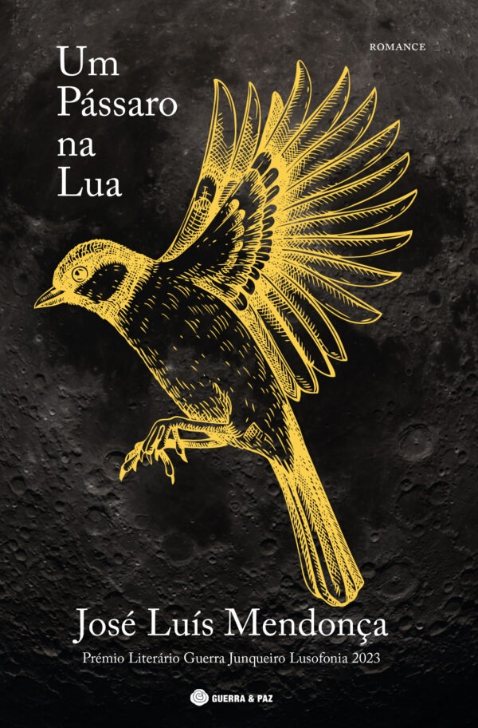
Angola · ficcao
Um passaro na lua
José Luís Mendonça
★★★★☆ (340)
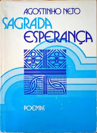
Angola · Poesia
Sagrada Esperança
Agostinho Neto
★★★★★ (2100)

Moçambique · Romance
Terra Sonâmbula
Mia Couto
★★★★★ (2310)

Moçambique · Romance
Niketche
Paulina Chiziane
★★★★½ (1590)
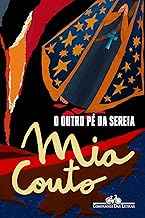
Moçambique · Romance
O Outro Pé da Sereia
Mia Couto
★★★★½ (980)
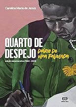
Brasil · Diário
Quarto de Despejo
Carolina Maria de Jesus
★★★★★ (3400)
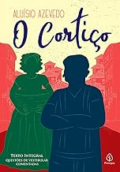
Brasil · Romance
O Cortiço
Aluísio Azevedo
★★★★½ (1950)
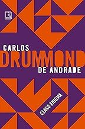
Brasil · Poesia
Claro Enigma
Carlos Drummond de Andrade
★★★★½ (1120)
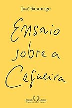
Portugal · Romance
Ensaio sobre a Cegueira
José Saramago
★★★★★ (5200)
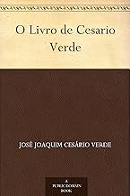
Portugal · Poesia
O Livro de Cesário Verde
Cesário Verde
★★★★½ (870)
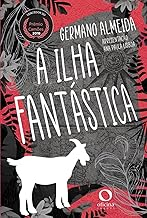
Cabo Verde · Romance
A ilha Fantástica
Germano Almeida
★★★★☆ (590)
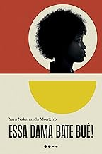
Cabo Verde · Biografia
Essa dama bate bué
Yara Monteiro
★★★★½ (430)
Cabo Verde
Dois irmãos
Germano Almeida
★★★★½ (380)
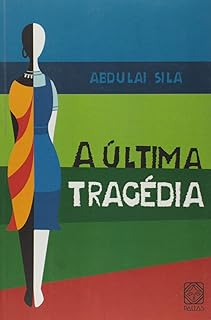
Guiné-Bissau · Romance
A última tragédia
Abdulai Sila
★★★★☆ (290)
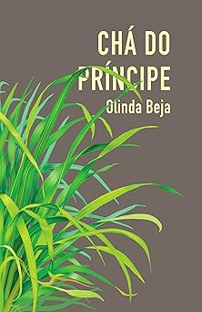
São Tomé e Príncipe · Romance
Chá do Príncipe
Olinda Beja
★★★★☆ (210)